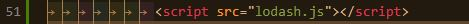

Why did I choose this topic
Lodash makes JavaScript easier by taking the hassle out of working with arrays, numbers, objects, strings, etc. Lodash’s modular methods are great for:
1. You can insert tag script with lodash as source to your html file.
2. Using npm.
$ npm i -g npm
$ npm i --save lodash
3. In Node.js.
// Load the full build.
var _ = require('lodash');
// Load the core build.
var _ = require('lodash/core');
// Load the FP build for immutable auto-curried
iteratee-first data-last methods.
var fp = require('lodash/fp');
// Load method categories.
var array = require('lodash/array');
var object = require('lodash/fp/object');
// Cherry-pick methods for smaller
browserify/rollup/webpack bundles.
var at = require('lodash/at');
var curryN = require('lodash/fp/curryN');
function myChunk(arr, size = 1) {
const output = [];
for (let i = 0; i < arr.length; i += size ){
let arrayChunk = arr.slice(i, i + size);
output.push(arrayChunk);
}
return output;
}
myChunk(['a', 'b', 'c', 'd', 'e', 'f'], 2);
//--> [ [ 'a', 'b' ], [ 'c', 'd' ], [ 'e', 'f' ] ]
myChunk(['a', 'b', 'c', 'd', 'e'], 3);
//--> [ [ 'a', 'b', 'c' ], [ 'd', 'e' ] ]
_.chunk(['a', 'b', 'c', 'd', 'e', 'f'], 2);
//-->[ [ 'a', 'b' ], [ 'c', 'd' ] ]
_.chunk(['a', 'b', 'c', 'd', 'e'], 3);
//-->[ [ 'a', 'b', 'c' ], [ 'd', 'e' ] ]
function myCompact(arr) {
const output = [];
arr.forEach(element => {
if (element) {
output.push(element)
}
});
return output;
}
myCompact([0, 1, false, 2, '', 3, NaN, null, undefined]);
//--> [ 1, 2, 3 ]
_.compact([0, 1, false, 2, '', 3, NaN, null, undefined]);
//--> [ 1, 2, 3 ]
function myIntersection(arr1, arr2) {
return arr1.filter(x => arr2.includes(x));
}
let a = {b: 1}
let b = a
myIntersection([2, 1], [2, 3]);
//--> [2]
myIntersection([5, 2, 1, 4], [2, 3, 4, 5]);
//--> [ 5, 2, 4 ]
myIntersection([a], [b]);
//-->[ { b: 1 } ]
let a = {b: 1}
let b = a
_.intersection([2, 1], [2, 3]);
//--> [2]
_.intersection([5, 2, 1, 4], [2, 3, 4, 5]);
//--> [ 5, 2, 4 ]
_.intersection([a], [b]);
//-->[ { b: 1 } ]
function mySize(collection) {
if (!Array.isArray(collection)) {
return Object.keys(collection).length
} else {
return collection.length
}
}
mySize([1, 2, 3]);
//--> 3
mySize({ 'a': 1, 'b': 2 });
//--> 2
mySize('pebbles');
//--> 7
_.size([1, 2, 3]);
//--> 3
_.size({ 'a': 1, 'b': 2 });
//--> 2
_.size('pebbles');
//--> 7
Goals:
toPairs: make an array with arrays of key-value pairs
fromPairs: make an object from given array of key-value pairs
function myFromPairs(arr) {
let output = {};
arr.forEach(element => {
output[element[0]] = element[1];
})
return output
}
(myFromPairs([['a', 1], ['b', 2], ['c', 3]]));
// --> { a: 1, b: 2, c: 3 }
function myToPairs(obj) {
let output = [];
for (prop in obj) {
if (!obj.hasOwnProperty(prop)) continue;
output.push([prop, obj[prop]]);
}
return output;
}
function Foo() {
this.a = 1;
this.b = 2;
}
Foo.prototype.c = 3;
myToPairs(new Foo); // --> [['a', 1], ['b', 2]]
// from pairs
_.fromPairs([['a', 1], ['b', 2], ['c', 3]]);
// --> { a: 1, b: 2, c: 3 }
// to pairs
function Foo() {
this.a = 1;
this.b = 2;
}
Foo.prototype.c = 3;
_.toPairs(new Foo);
// --> [['a', 1], ['b', 2]]
Thank you for your attention!